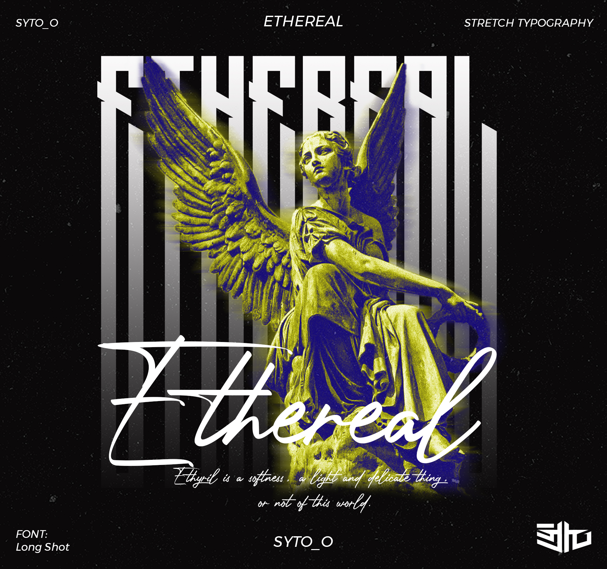

Ethereal termasuk dalam bahasa inggris.
Bahasa Inggris adalah bahasa jermanik barat berasal dari dari rumpun bahasa Belanda, Jerman, Yunani. Bahasa Inggris pertama kali berasal dari negara inggris dan merupakan bahasa dominan di beberapa negara seperti
Inggris Raya, Amerika, Australia, Selandia Baru, Kanada, dan berbagai negara lain di samudra pasifik.
Penggunaan kata ethereal bisa kita jumpai di dunia nyata seperti di koran, buku, artikel, brosur, majalah dan di sekolah saat pembelajaran
maupun di dunia maya seperti di sosial media facebook, instagram, tiktok, youtube, whatsapp, twitter dan lain sebagainya.
Penggunaan kata ethereal juga bisa digunakan di artikel, berita, jurnal dan sebagainya. Supaya kita tidak salah dalam memahami kata itu,
kita harus tau arti kata tersebut.